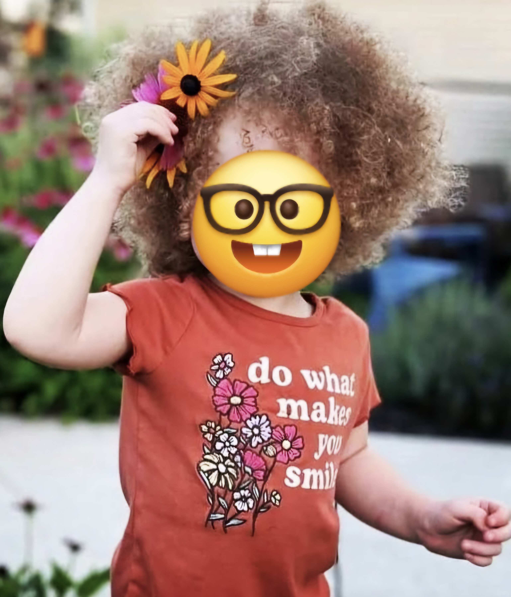

Warning: This page contains personal tributes, images, and reflections from survivors who have experienced deep loss. This may include the death of a child, missed milestones, and moments of grief and rememberence.
Some stories may include mentions of trauma, abuse, or anniversary dates. Please take care of your heart and body as you move through this space.
Step away when needed. Return when ready.
Welcome to the Wall of Hope
This is a sacred, evolving space where survivor mothers' can share their stories, tributes, photos, or moments of healing and remembrance. Here, hope lives in every post — whether it’s a birthday tribute, a quiet memory, a picture from a joyful day, or an acknowledgment of a difficult anniversary.
The word Hope is the root of this wall — Hope for healing. Hope for connection. Hope that even in pain, there’s evidence of love.
Grandma x3
These are the moments I cherish. Nothing better than holding my baby's babies.
Mothers Day Miracle 2024
My children came to visit me! Not only was this Mothers day, it was my daughter's sweet sixteen. Bittersweet moment for the three of us.
Miraculous Reunion
She shouted,“mommy'. They said she wouldn't know me, but she ran to me."Mommy, when can I go home to live with you?" I cry inside, holding onto the memory of this precious moment.
Placeholder: My Youngest Son
He said he’s proud of me. That alone is a gift I never thought I’d receive.
The Grandest of Babes
I love her so, and I miss them so... Today, her sweet little smile is what matters most.
In Loving Memory of Kian
Today he would've turned fifteen. I shouldn't have to come here, but praise God that I get to.